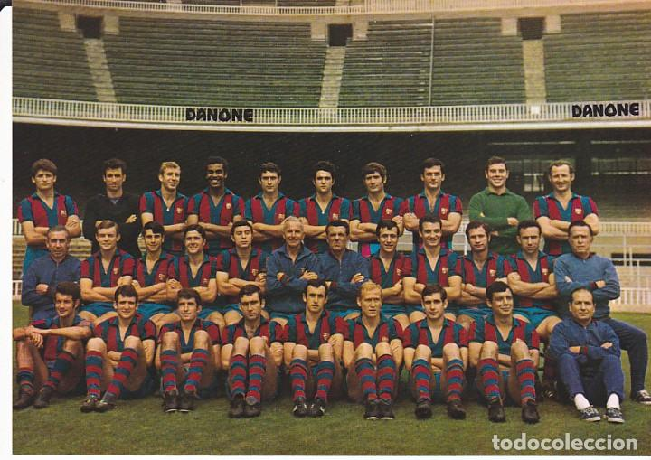

FC Barcelona
FC Barcelona
1899 -1909

FC Barcelona, founded in 1899 by a group of young foreigners living in Barcelona, was the result of the increasing popularity of football, and other British sports, across Europe. These origins have conferred upon the Club its intercultural identity, multi-sport focus and its deeply-rooted allegiance to Barcelona and Catalonia. The foundation of the Club coincided with a time when people were becoming interested in playing sport in Catalonia; this social context and Catalonia’s idiosyncratic culture led to the creation of a new model of modern leisure. Gamper, the Club’s founder, was the inspiration and driving force behind the Club’s first 25 years. His commitment to FC Barcelona went far beyond his role as player, director and president.
1969-78. Cruyff and democracy
In 1969, Agustí Montal Costa won the elections and became president of the Club. His programme insisted on member involvement, and was committed to the idea that all members would see their opinions reflected through their votes. In 1973, Montal was re-elected president despite only the members' representatives being able to vote. The outbreak of corruption associated with foreign players who falsified birth certificates in order to claim Spanish heritage and be admitted into Spanish football meant that it became possible to sign foreign players. Barça’s dream of signing Johan Cruyff began to look like a reality.
From the season 2008/09 under Josep Guardiola, the team improved even further. Playing with the same style that Cruyff had introduced, Guardiola was a firm supporter of basing his team around the club's own youth system and promoted several young talents to the first team, and the result was the greatest Barça team ever. This team was the culmination of everything that FC Barcelona stands for, and produced an amazing string of major titles, including two Champions Leagues and three Spanish Leagues, plus the long-awaited Clubs World Cup, which was finally won in 2009, that extraordinary year when Barcelona won all six major trophies, something unprecedented in the history of European football. Barça broke all kinds of records, played memorable matches and won just about every title on offer. But the finest hour for Guardiola's side came at Wembley on 28 May, 2011, when the world was enchanted by the kind of football that dreams are made of. The world's press bestowed praise on this extraordinary side that had written one of the most incredible chapters in the history of the game. The Guardiola era ended in 2012 but Barça continued their success under Tito Vilanova (the league in 2012/13) and Luis Enrique who in 2015 won the Champions League, the League and the Copa del Rey in another historic treble winning season. The greatest international recognition of this came when the FIFA Ballon d'Or nominations in 2010 shortlisted Xavi, Iniesta and Messi for the honour, all three of whom had grown up at La Masia, the residence where young sportspeople of all ages are trained and educated.